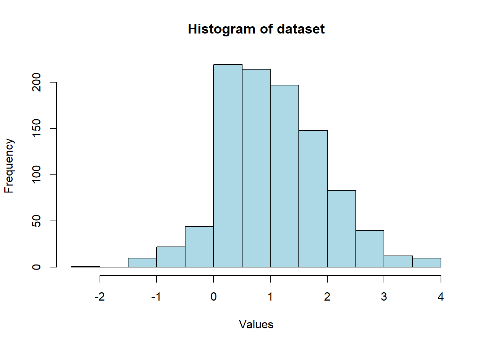
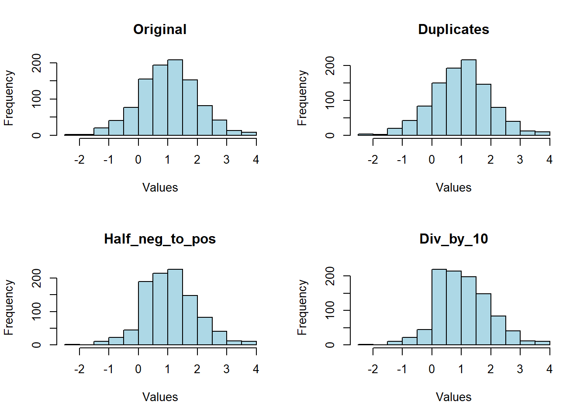

IMPACT OF ERRONEOUS DATA TRANSFORMATIONS ON ANALYSIS
Introduction
In this exercise we will generate some data from the normal distribution with mean 1 and standard deviation 1. We then transform the data as outlined in the Data Simulation section and proceed to investigate whether the mean of the true data generating process is greater than 0. We will then discuss some of the issues brought about by the data transformations and what steps we can put in place to flag some these issues during data analysis.
All the code for this exercise can be accessed [here](https://github.com/JunweiChen1012/Linear_models_tutorial).
Data Simulation
We draw 1000 observations of data from the normal distribution of mean 1 and standard deviation 1. The last 100 observations are similar to the first 100 observations. We then change half of the negative draws to positive. Finally, we divide all observations with values between 1 and 1.1 by 10. The code that generates the observations can be accessed [here](https://www.github.com).
Investigating whether the mean of the true data generating process is greater than 0
To investigate whether the mean of the true data generating process is greater than 0, we will use the one-sample t-test.
We can use the one-sample t-test because we have a large sample size of 1000 observations. Furthermore, a visual inspection of the histogram plot of the sample data shows a bell-shape curve. This suggests normality. See the histogram plot below.
One-sample t-test
Null hypothesis: true mean <= 0
Alternative hypothesis: true mean > 0
Below is the test result.
One Sample t-test
data: combined_sample_1000
t = 36.822, df = 999, p-value < 2.2e-16
alternative hypothesis: true mean is greater than 0
95 percent confidence interval:
1.0117 Inf
sample estimates:
mean of x
1.059053 It can be observed that the p-value is less than our chosen significance level (0.05), the test statistic is positive and the confidence interval for the mean does not include 0. These observations give sufficient evidence to suggest that the true mean of the data generating process is greater than 0.
Issues brought about by the data transformations
In order to investigate the impact of the data transformations, we will compute summary statistics (median, mean, and standard deviation) of the relevant datasets before and after each transformation to assess the impact of the data transformations.
We will then proceed to plot a histogram of each of the datasets to determine whether a visual inspection of the plots would have been useful in flagging the unintended data transformations.
Below is a description of each of the datasets whose summary statistics will be computed.
Datasets
original - 1000 observations drawn from the normal distribution with a mean of 1 and standard deviation of 1.
duplicates - a derivative of the original dataset above. However, the last 100 values have been replaced with the first 100 values.
half_neg_to_pos - a derivative of the duplicates dataset above. However, half the negative values were then converted into positive values.
div_by_10 - a derivative of the half_neg_to_pos dataset above. However all values between 1 and 1.1 were divided by 10.
Summary statistics
Below are the generated summary statistics.
Median Mean SD
Original 1.0196749 1.0108092 0.9879296
Duplicates 1.0138680 0.9949568 0.9953398
Half_neg_to_pos 1.0647365 1.0864445 0.8944764
Div_by_10 0.9777297 1.0590530 0.9095233It can be observed that each transformation of the dataset had an impact on the mean, median and standard deviation. As a result of this, it is recommended to compute and monitor the dataset summary statistics as part of the data analysis process.
Visual Inspection of Plots
Below are the histograms of the 4 datasets. The impact of the unintended data transformations are visible in the plots.

Let us review the plots one by one. When we compare duplicates against original, there is not much of a difference in the plots so we are not able to flag the impact of duplicating the first 100 observations in the dataset.
However, comparing Half_neg_to_pos histogram against Duplicates and Original histograms we note that the frequency of values less than 0 has decreased. This should prompt us to investigate what happened. When we check the data, we note that initially, there were 153 negative values in the duplicates dataset however only 77 negative values remained in the half_neg_to_pos dataset.
When we compare the Div_by_10 histogram to the other histograms, we notice that the frequency of values between 0 and 1.5 has changed. For example, in the Half_neg_to_pos histogram, the frequency of values between 0 and 1.5 seems to be increasing at each step however in the Div_by_10 histogram, the frequency is decreasing. This should prompt an investigation to find out what happened.
Therefore, it is recommended to plot and visually examine data plots as part of the data analysis process to flag any errors that might arise.